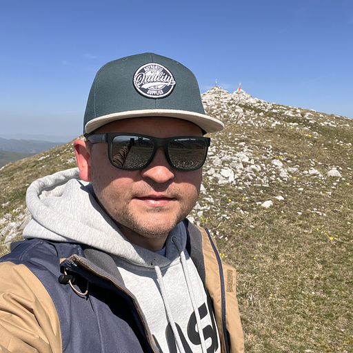

Oleksandr Bodrov
Hi there! I'm Alex, and I love building apps with React and TypeScript. A few enterprise projects under my belt, and I'm ready for more. Leading teams, Scrum mastering, and delivering top-notch products are things I tend to do. Besides regular Web Frontend, I'm also into FullStack development and React Native. AWS or Google Cloud, I'm comfortable with both. Also a fan of MobX, React-Query, MUI, and Tailwind CSS. MongoDB and PostgreSQL are my go-to databases. I'm always open to new challenges and opportunities, so feel free to reach out!
🤙 oleksandr.bodrov@icloud.com
Tech Stack
TypeScript, JavaScript
React, Next.js, Node.js
REST API, GraphQL
MongoDB, PostgreSQL
MobX, Recoil.js
MUI, Tailwind CSS, CSS Modules
AWS Lambda, AWS S3, Docker
Jenkins, GitHub Actions
Jest, RTL, Sonar
Context, Redux-toolkit
Sliced, Features Architectures
Scrum, Agile, Jira, Confluence
React-Query, Apollo, Axios
React-Virtualized, React-Window
React-Router, TansTack Router
Babel, Webpack, Vite
GitHub Actions, Jenkins
Stripe, YouTube, Instagram APIs
React-Native, React Navigation
Storybook, Chromatic
Yoga, Prisma
Work History
🚧 Senior React Developer/Scrum Master
Almamedia | Tampere, Finland
09/2022 - Present
OviPro Real Estate
- Migrated to Featured Sliced Architecture, which improved project maintenance and speed up development
- Introduced new cache strategy with React-Query which improved performance, UX and reduced BE load by 20%
- Updated MUI, React-Query, Date-Pickers dependencies on the project
- Developed a few CLI tools, including nested type generation from Backend remote schema
- Proactively participated on features design & prototyping
- Improved unit tests coverage by 18%
- Worked on Backend APIs
- Managed Team as a Scrum Master
Senior React Developer
Middle Backend Developer
Scrum Master
~ 2 years
🚧 Senior React Developer
Inditex | Arteixo, Spain
09/2021 - 09/2022
Corporate Traceability app
- Designing & implementing new features
- Improved performance by 40% with memoization and lazy loading
- Contributed on internal UI library
- Implemented dozens of brand new utils and components for the corporate UI library
- Co-authored internal code style guide
- In-memory storage integration
- Migrated unit tests from Enzyme to RTL
- Collaborated on e2e tests integration (Cypress)
- Hold public Demo of new features
Senior React Developer
Scrum Master
~ 1 year
🚧 Fullstack Developer
Bazaarvoice | Austin, TX
06/2016 - 09/2021
Galleries, Social ECommerce Platform
- Migration from BackBoneJS to React
- Implemented of new API endpoints
- Integration with Instagram, YouTube, Facebook APIs
- Implemented of CSS Modules which helps to improve styling practices
- Infrastructure Management with AWS Lambdas, CloudFront, S3 and EC2
- Leaded the team of 3 developers
- Cross-Functional Collaboration
- Continuous Improvement Advocacy
FullStack Developer
Senior Front End Engineer
Team Lead
~ 5 year
🚧 Software Engineer
Bazaarvoice | Austin, TX
08/2014 - 06/2016
Ratings & Reviews, Customers Feedback Platform
- Technical Support for users
- Troubleshooting
- Platform integration
- Features implementation
- On-duty engineer to support for critical issues
- Bug fixing
- Refactoring of legacy components
Senior Support Engineer
Junior Web Developer
Education & Contact Information
✴ Bachelor of Engineering. PSACEA, June 2012
✴ Burgas, Bulgaria
✴ Citizenship: Ukraine